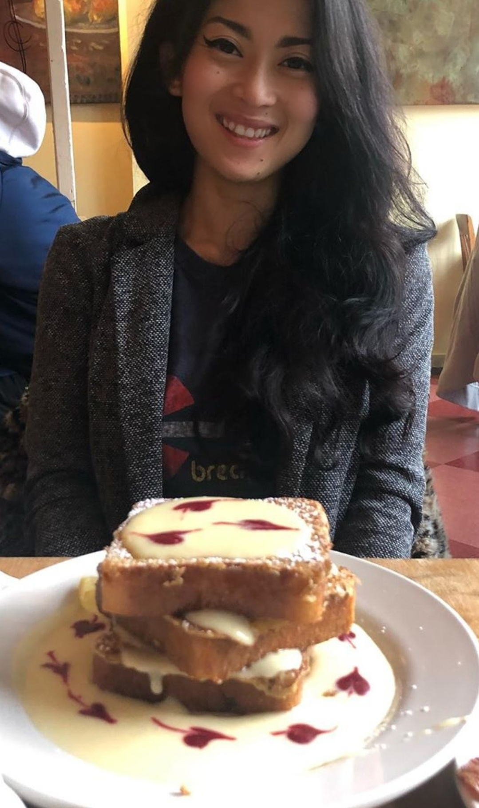

About Me
Hello! My name is Amor, and this is my first bootstrap page!
I am a former healthcare professional of eight years, and most recently worked in a Surgical ICU as a tech for 3 years. I have moved from providing service at the bedside to tableside as the overseeing Maitre D' for Hogsalt Hospitality where I train and mentor the all hosts within the company; maximize the reservations for each restaurant; manage, measure, and improve guest satisfaction, and occasionaly make latte art. I'm seeking to pivot into a more technical profession, where I may utilize both logic and creativity in unison.
Outside of work I enjoy reading, playing scrabble, collecting records, going to shows and supporting local music, tasting my way through the vast array of restaurants and cafes in Chicago, and spending time with my cats Eno and Lily.
Connect with Me